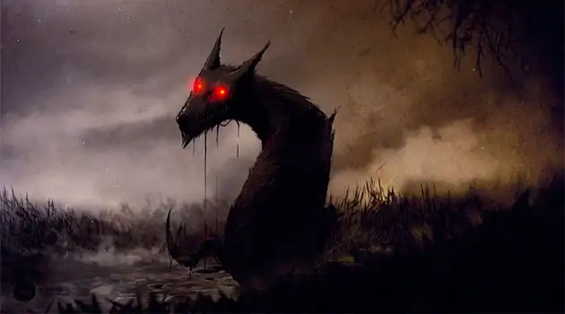

Por que elegí este tema
Por que me gustan mucho los lobos desde que soy pequeño y me fascina su comportamiento tan particular que los hace unicos ante el resto de animales del mundo.

Asi mismo los diferentes mitos que surgen alrededor de este animal me parecen facinantes, desde los hombres lobo, hasta el cadejo, cada cultura tiene su forma de verlo, aunque principalmente es mala la forma de ver que tieene de ver a los lobos en la antiguedad, generalmente como malos, realmente solo demuestra cuanto miedo y/o respeto le tenian a este animal tan particular eh interesante.
Hablando de Lobos en la mitologia
En el aiguente video voy a hablar acerca de un mito que tiene a los lobos como personage principal de esta historia:
En caso del que video no se vea, dar click en el link de arriba.
Si quieres conocer mas sobre esta fantastica criatura te dejamos el siguiente video para que lo disfrutes:
En caso del que video no se vea, dar click en el link de arriba.